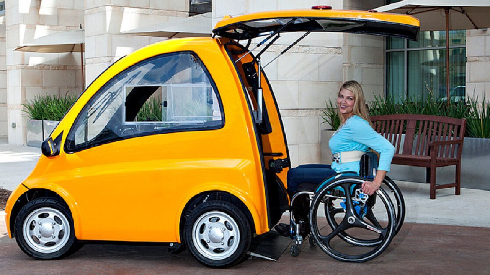

KENGURU 2024

R$ 60.000
O Kenguru tem apenas uma porta localizada em todo o painel traseiro e destina-se a um único passageiro.Ao pressionar um botão, a porta abre-se e surge uma rampa para fácil acesso.Em vez de volante e pedais, este modelo utiliza botões de aceleração e travagem e comandos direcionais.